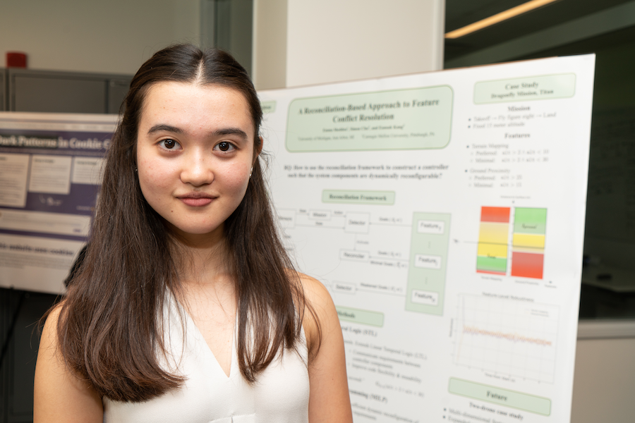

Emma Shedden
Undergraduate Researcher and University Student
Computer Science & Mathematics
College of Engineering
University of Michigan

About Me
I am a computer science undergraduate researcher and student, advised by Wes Weimer at the University of Michigan. My current research focus is in CS pedagogy and the cognition of computer programming.
I'm also an Instructional Aide (IA) for EECS 203: Discrete Mathematics at UM.
In early 2023, I was a student researcher in mathematics with the Lab of Geometry at Michigan, LoG(M), under the mentorship of Dr. Hai Le. I was a 2022 Software Engineer Intern at Facebook (now Meta), working on user data protections with the AI Security team. Prior to that, I was a Software Engineering Research Intern at Carnegie Mellon University's Software and Societal Systems Department (S3D) through the NSF-sponsored REUSE program. While there, I conducted research on how to generate control logic from formal specifications of cyber-physical systems, advised by Eunsuk Kang.
I am applying to Computer Science PhD programs starting in Fall 2024!
Research Interests
I plan to conduct research that improves real-world software by finding creative new ways to leverage the mathematical foundations of computer science. I'm particularly interested in formal methods and their potential when combined with data-driven strategies, such as in the areas of Automated Program Synthesis, Repair, Testing, and Verification.
Publications
-
Hammad Ahmad, Madeleine Endres, Kaia Newman, Priscila Santiesteban, Emma Shedden, & Westley Weimer.
Causal Relationships and Programming Outcomes: A Transcranial Magnetic Stimulation Experiment.
Accepted to Proceedings of the 46th International Conference on Software Engineering (ICSE) 2024. [pdf]
-
Simon Chu, Emma Shedden, Changjian Zhang, Rômulo Meira-Góes, Gabriel A. Moreno, David Garlan, & Eunsuk Kang.
Runtime Resolution of Feature Interactions through Adaptive Requirement Weakening.
In Proceedings of the 18th Symposium on Software Engineering for Adaptive and Self-Managing Systems (SEAMS) 2023. [doi]
Research Experience
Undergraduate Researcher | Westley Weimer Lab, University of Michigan
Sep 2022 - Present
-
Proposed and implemented a blinded data analysis using multilevel linear regression on psychometric data from a 15-participant human study, accepted to ICSE 2024
-
Assisted in participant recruitment, transcranial magnetic stimulation (TMS), and fMRI sessions
-
Made available a complete open-source code artifact for replication of our work
-
Designed the coding scheme for a mixed-methods study of online peer tutoring transcripts from nontraditional computer science student interactions during the COVID-19 pandemic
-
Manually annotated chat transcripts (1200+ messages) for use in qualitative and quantitative data analysis
Undergraduate Researcher | LoG(M), University of Michigan
Jan 2023 - Apr 2023
-
Participated in the Lab of Geometry at Michigan under Dr. Hai Le, on a team with 2 other undergraduate students
-
Implemented 4 competing algorithms for simulation of standard and fractional Brownian motions, and analyzed their theoretical and observed efficiencies and accuracies
Undergraduate Researcher | Eunsuk Kang Lab, Carnegie Mellon University
Jun 2021 - May 2022
-
Participated in the National Science Foundation sponsored Research Experience for Undergraduates in Software Engineering (REUSE) hosted by the Institute for Software Research (ISR/S3D) as a full-time summer researcher; continued part-time through the 2021-22 academic year
-
Collaborated on the design of a novel reconciliation framework to resolve feature conflicts in cyber-physical systems using formal methods and Mixed Integer Linear Programming (MILP), published in SEAMS 2023
-
Contributed to the design of a novel grammar to express system requirements and implemented its parser
-
Implemented a case study with three competing quadcopter controllers, and performed testing and data visualization to validate our framework design
-
Migrated and documented an over 10,000-line repository for six competing quadcopter controller frameworks to support future use in testing and analysis
Service
Oct 2022
-
Ran logistics and tech support for hybrid format speaker sessions over 5 days
Student Volunteer | Honors Alternative Spring Break, University of Michigan Ann Arbor
Feb 2022 - Mar 2022
-
Participated in the College of Engineering Honors Alternative Spring Break at Biloxi, Mississippi
-
Helped rebuild community gardens and other infrastructure following seasonal hurricane damage over 9 days
Professional Experience
Jan 2022 - Present
-
Contributed to course design and development discussions as an IA for 4 semesters
-
Planned and delivered weekly one-hour discussions for a class section of 40 undergraduate students
-
Organized weekly two-hour office hours to provide individualized student support for a class of ~1,000 students
May 2022 - Aug 2022
-
Designed and implemented a generalized service and library enforcing internal access controls on AI assets, scaled to reliably handle over 200 million queries per second using limited cloud resources
-
Completed cost-benefit analyses of several internal tools to support server- and client-side caching solutions
-
Proposed and implemented design and reliability improvements in multiple other data privacy projects
Supplemental Instruction Leader, EECS 203: Discrete Mathematics | University of Michigan Ann Arbor
Feb 2021 - Dec 2021
-
Introduced a new IBL-based class structure to increase student engagement and opportunities to collaborate
-
Planned and delivered weekly 90-minute supplemental instruction sessions to a class of 15 undergraduate students
Reach me through email or GitHub!